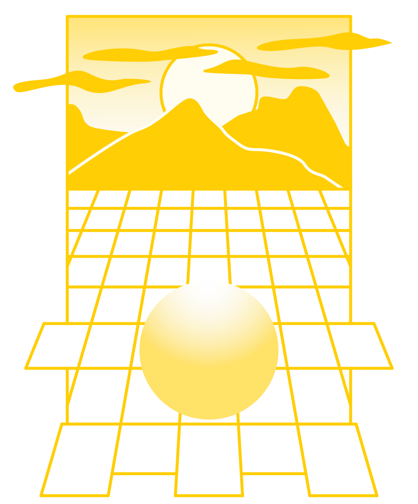
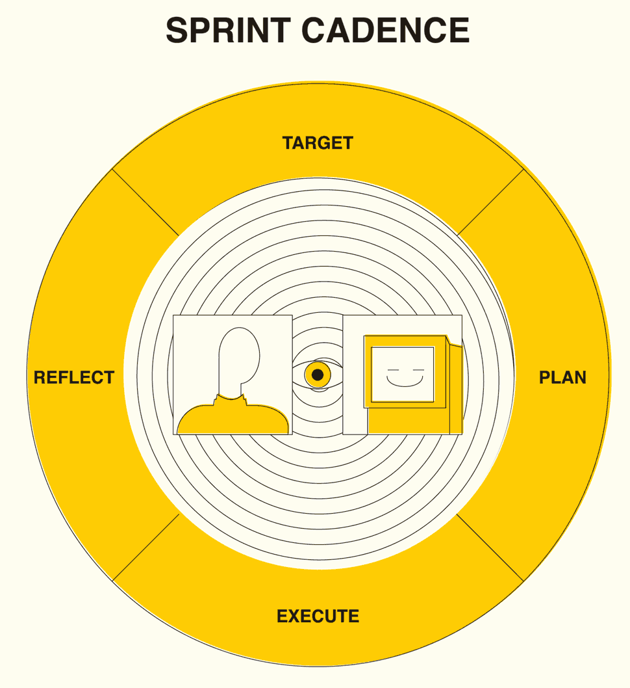
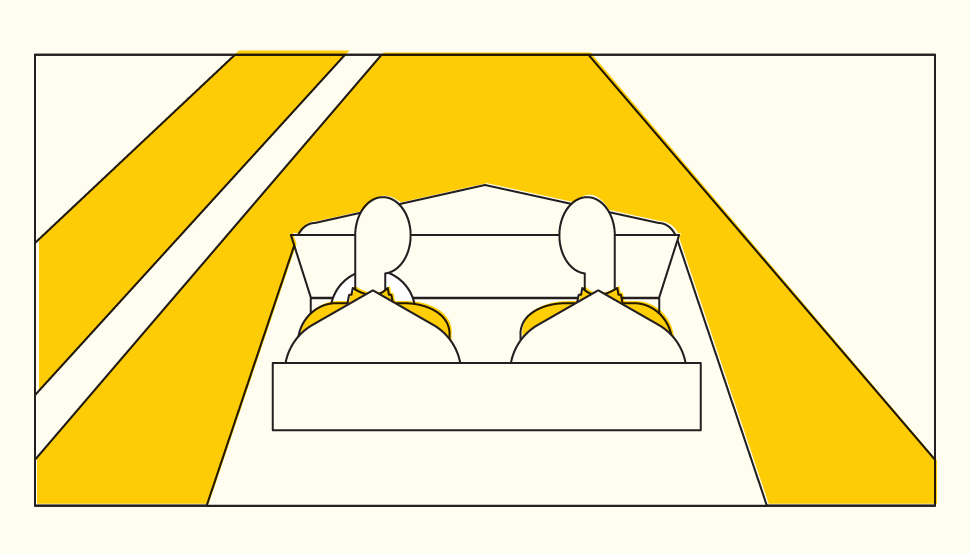
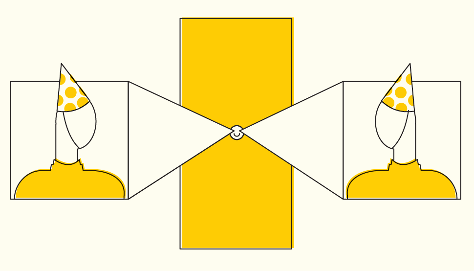
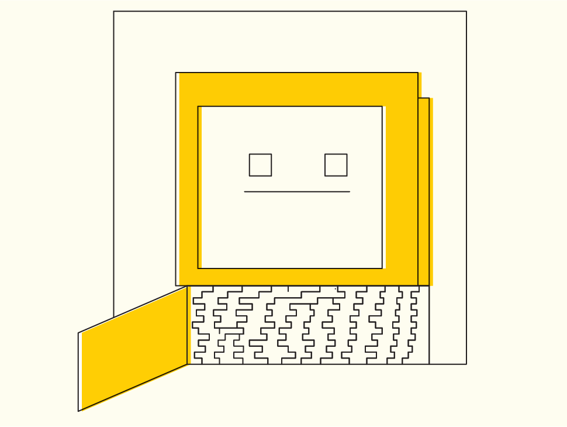

What to expect from each step of your project with Polar Notion.
section 3-1
Great Expectations
While we continually adapt and improve our workflow, excellence remains our baseline. We strive for clear communication, consistent thoughfulness, and outstanding delivery. Each step of our process is intentionally designed for you.

section 3-2
The Pioneer Process
We can't predict the future, but we have a method for helping shape it. Throughout history, great explorers have been driven by a desire to do something that had never been done before. Following in their steps, our goal is to help illuminate the path of innovation. Every project we do follows this process.
Target: Where are we going?
The destination will change and evolve, but naming our target gives us something to anchor to and plan toward. Setting a target casts vision for where we are headed and why we are doing the work.
Plan: How will we get there?
Once we know where we're going we'll chart a course together. This will be our project roadmap. There are a few key elements to any project that should be considered and optimized.
- Timeline: How long we do have or need?
- Resources: What money, tools, and supplies are available or required?
- People: Who will be able to help?
Execute: Take action.
With a clear target and a solid plan, it’s time to take action. All of our preparation allows us to Go Boldly Forward and do the work. Communication and adaptability ensure we stay agile along the way.
Reflect: What did we learn?
Reflection encourages growth. Assessing the journey’s progress provides more perspective that can lead to compelling insights. Together we'll identify ways we can continue to improve on our work.
Repeat: Where are we headed next?
Once you’ve reflected on the journey thus far, it’s time to set our next destination. Knowing what we now know, we can repeat the process to build on the work that's been completed. Before taking action again, we revisit our Target and Plan our next move.

section 3-3
Project Flow
Here's what it actually looks like to create something with our team. These are the practical steps we take to create and deliver great work.

section 3-4
Getting Started
Before we get to work, there are a couple of things we'll address to make sure we can communicate and collaborate effectively. Let's get you on board!
Slack
Look out for an invite to join our team on Slack. This is where we'll keep all of our project conversations in one place. Feel free to send a wave 👋 once you’re in!
Master Services Agreement
Check your email for a link to sign our services agreement online. Having this prevents us from having to sign a new contract for every project.
Scope of Work
Together we'll create an SOW that defines the project deliverables, timeline, and cost. This will serve as our final checklist when the work is done.

section 3-5
Getting to Work
It's go time! Once a project starts, our team has a standard process of collaboration. This is how we'll communicate throughout the project as we create, review, and deliver the work.
Daily Stand-Ups
While working on your project, our team members meet to discuss their progress every day. This internal meeting ensures that we maintain a tight feedback loop and address project needs as they arise.
Weekly Check-In
We send progress updates every Friday. We'll give a summary of the objectives that were accomplished that week and circle back on anything our team needs to keep moving forward.
Sprint Demo
The Demo is our chance to show you what we've been working on. It's the culminating event for each Sprint and allows you to review the progress. Following the Demo, is the Quality Assurance period.
Quality Assurance
The QA period is where you and our team confirm that the Scope of Work has been completed successfully. During this time, new ideas typically emerge which can be added to the next phase or saved to be addressed later.